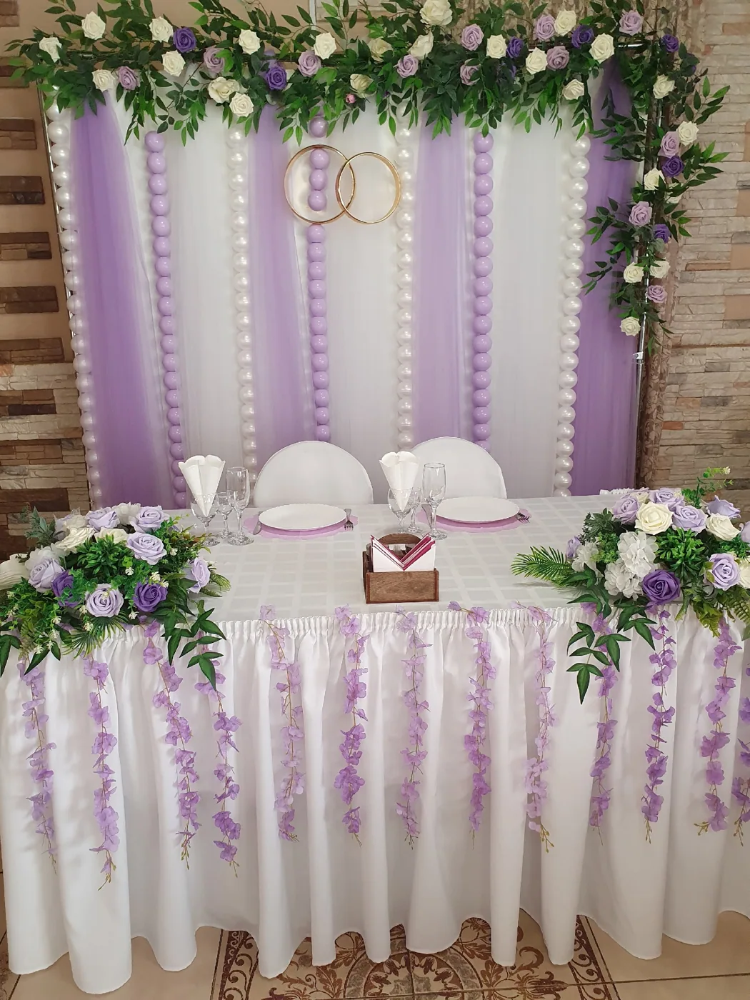

Кафе-столовая · КунгурПо-домашнему.
По-домашнему.
С аппетитом.
Домашняя кухня, выпечка и встречи за общим столом в кафе на улице Ленина.
Посмотреть меню ↓
Добро пожаловать
На обед и на праздник
В «Аппетите» готовят завтраки, обеды и выпечку. Здесь также принимают заказы на банкеты и пироги.
Позвоните, чтобы обсудить мероприятие или уточнить заказ и доставку.


Кунгур · Пермский крайЖдём вас
Ждём вас
в гости
Позвоните, чтобы уточнить меню, заказать пироги или обсудить банкет.
АдресКунгур, улица Ленина, 51
ЧасыПн–пт 08:00–18:00
Сб 08:00–16:00
Вс — выходной
Сб 08:00–16:00
Вс — выходной